AI가 직접 간을 보게 하기
로렌 탄은 영상에서 SpaceX 수석 엔지니어로 소개돼요. 원래 대담에서 본인은 Cursor에서 일하다가, Cursor가 지금은 SpaceX AI가 됐다고 말해요. 그는 자는 동안에도 AI들이 버그를 찾아 고치고 코드를 반영하게 해 둬요. 아침에 일어나면 밤새 합쳐진 PR(Pull Request) 목록부터 훑어봐요.
아래 화면이 그 목록이에요. feat(pstack): …, Add the Rippling MCP plugin 같은 PR이 하루 사이에 줄줄이 merged 상태로 쌓여 있어요.
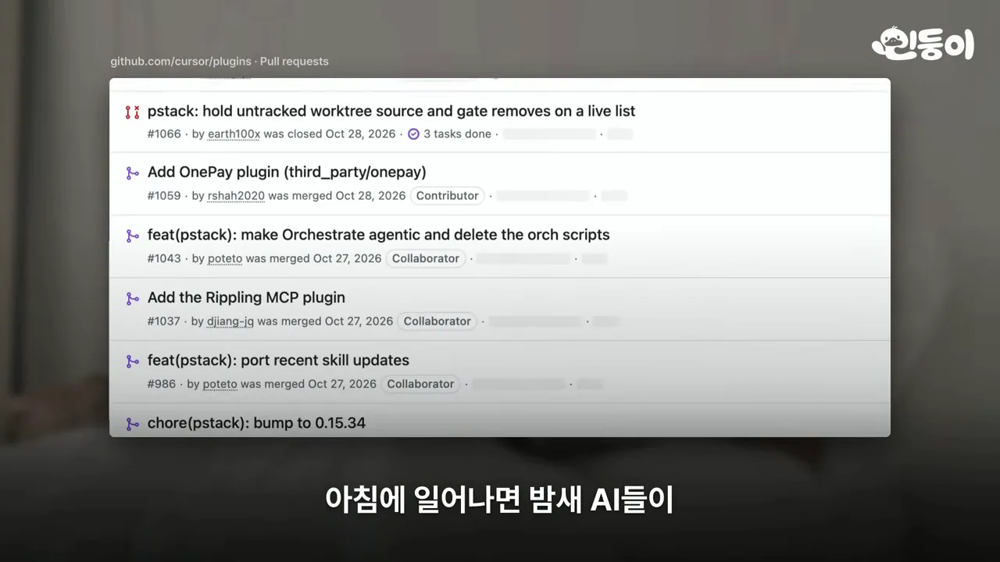
로렌 탄은 이 체계를 미슐랭 주방에 빗대요. 별을 받으려면 한 번 맛있는 걸로는 부족하고, 언제 가도 같은 맛이 나야 해요. 그래서 직접 요리하는 대신, 실력 좋은 AI 요리사들이 매번 같은 맛을 내도록 주방을 차렸어요. 요리사는 실력을 마음껏 쓰되 틀린 길로는 못 가는 주방이라, 셰프가 모든 접시를 맛볼 필요도 없어요.
셰프가 대신 간을 보던 시절
시작은 Cursor의 AI 작업창이 버벅이던 문제였어요. AI가 코드를 고치면 로렌 탄이 브라우저를 열어 속도를 재고, 그 결과를 다시 AI에게 붙여 넣었어요. 요리사가 간을 볼 때마다 셰프가 대신 맛보고 알려 주는 꼴이었죠.
그래서 AI가 직접 앱을 켜서 사람처럼 눌러 보고, 느린 곳이 있으면 성능 기록까지 떠 보게 하는 검증 스킬을 만들었어요. 아래 화면은 그 스킬 설명의 한 대목이에요. 주황색으로 칠한 1번 launch it(앱을 띄우고)과 2번 exercise a feature the way a user would(사용자처럼 기능을 써 보는 것)가 핵심이에요.
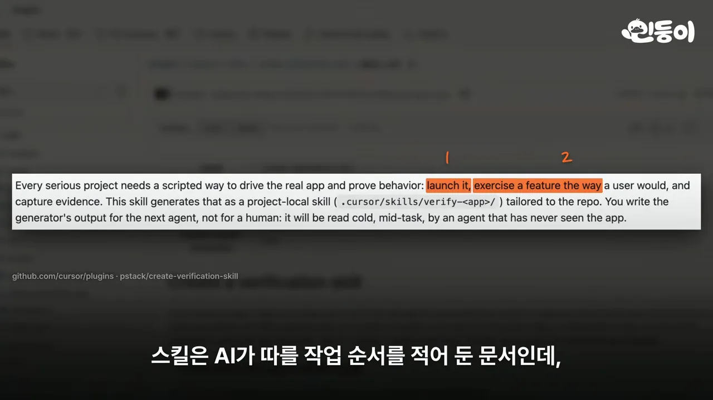
로렌 탄은 이런 스킬을 모아 pstack이라는 이름으로 공개했어요. 화면의 폴더 트리에서 pstack 아래 skills 폴더가 펼쳐져 있고, 그 안에 스킬이 하나씩 폴더로 들어 있어요.
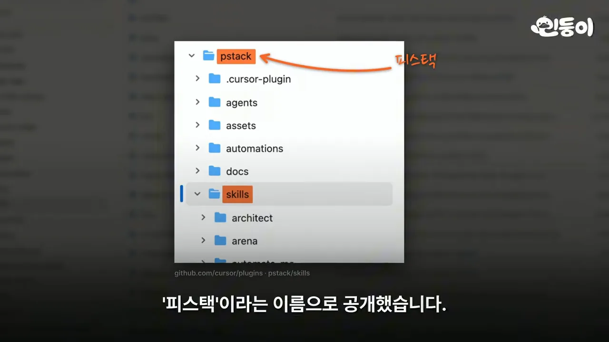
검증 스킬은 두 개가 짝을 이뤄요. 앞 화면의 create-verification-skill은 내 프로젝트 전용 검증 스킬을 만들어 주고, 뒤 화면의 maintain-verification-skill은 앱이 바뀌면 그 검증 스킬도 맞춰 고쳐 줘요. 둘 다 언어나 프레임워크를 가리지 않는다고 적혀 있어요.
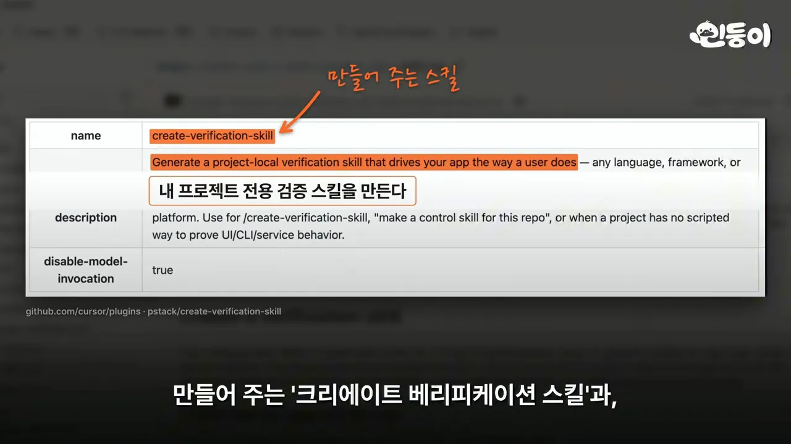
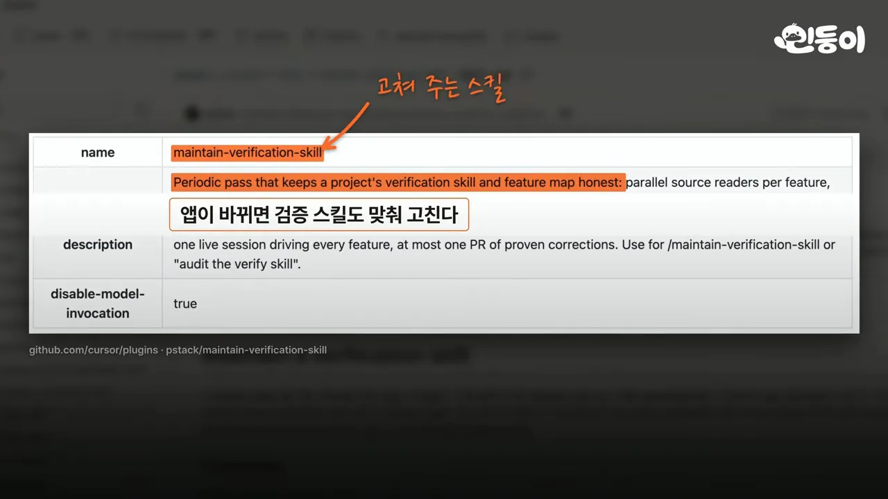
매번 새로 짜던 확인 코드를 스크립트로
다만 처음엔 AI가 확인할 때마다 확인용 코드를 새로 짰어요. 짤 때마다 방식이 달랐고, 잘 짠 코드도 대화가 끝나면 그대로 버려졌어요. 요리사마다 감으로 소스를 새로 만드는 시기였던 셈이에요.
그래서 매번 똑같이 하는 부분을 스크립트로 만들어 스킬 안에 넣었어요. 아래는 poteto-mode 스킬의 scripts 폴더예요. check-plan.mjs, worktree-audit.sh 같은 파일이 들어 있어요.
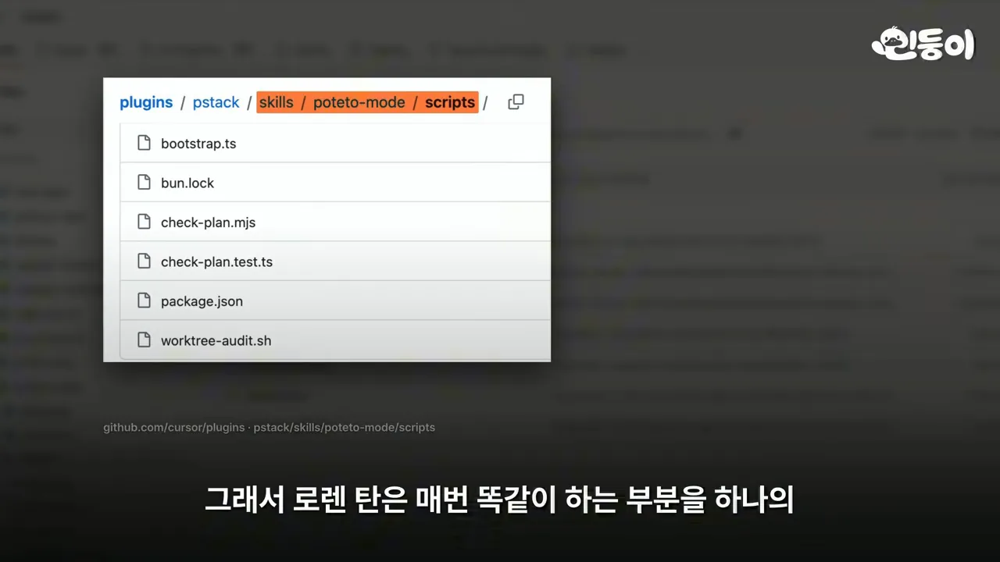
효과는 두 가지예요. AI는 원래 가장 쉬운 길로 가려 하는데, 준비된 스크립트를 돌리는 게 그 가장 쉬운 길이 됐어요. 맷 포콕은 여기에 하나를 더 짚어요. 레시피가 있으면 누가 만들어도 같은 맛이 나듯, AI도 같은 확인을 매번 같은 방식으로 하게 된다는 거예요.
같은 실수는 구조로 막아요
앞의 스크립트 이야기는 pstack의 원칙 하나로 정리돼 있어요. 화면의 Build the Lever 문서는 '일이 간단하지 않으면 손으로 하지 말고, 그 일을 해 줄 도구부터 만든다'고 적고 있어요.
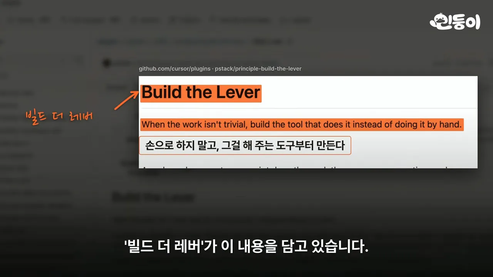
파일 여덟 개짜리 앱을 기능 폴더로
로렌 탄이 지금 만드는 AI 비서 앱 GrokBot은 초기 버전이 파일 여덟 개뿐이었어요. 파일 하나가 적어도 1만 줄이었죠. 그래서 Dune이라는 사내 개발 틀을 만들어 구조부터 바꿨어요.
규칙은 두 가지예요. 기능마다 폴더를 하나씩 두고, 같은 일을 하는 방법은 하나만 허용해요. 아래 그림처럼 features/ 아래에 login/, search/, alerts/가 따로 있고, 폴더마다 같은 모양의 파일 세 개가 들어가요. 이 모양을 어기는 코드는 린트 규칙에 바로 걸려요.
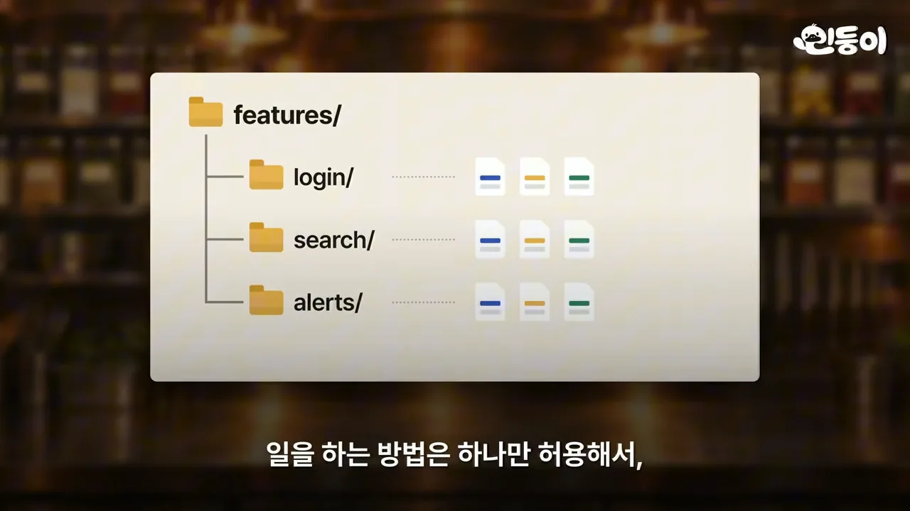
두 번 말했으면 규칙으로 바꿔요
그 뒤로 AI가 실수하면 로렌 탄은 그 실수를 어떤 검사 규칙으로 막을지부터 생각해요. pstack의 Encode Lessons in Structure가 같은 이야기예요. 화면의 설명은 '같은 지시를 두 번째 적고 있거나 같은 교정을 반복하고 있다면, 글을 늘리지 말고 린트, 메타데이터 플래그, 런타임 검사, 스크립트로 규칙을 박아 넣으라'고 해요.
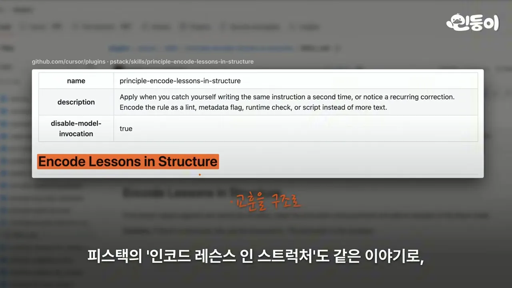
맷 포콕은 이 방식이 좋은 이유를 이렇게 말해요. AI에게 규칙을 미리 다 외우게 하지 않아도, 틀리는 바로 그 순간 규칙에 부딪혀 스스로 방향을 바꾼다는 거예요. 긴 지시문은 AI가 읽고도 놓칠 수 있지만, 린트 오류는 무시하고 지나갈 수가 없어요.
주문 받기와 나누기도 AI에게
여기까지가 AI 요리사 한 명을 제대로 일하게 하는 법이었다면, 이제는 여러 AI에게 일을 나누는 법이에요. 먼저 주문 받는 일부터 넘겼어요.
버그 신고는 사내 메신저, 메일, X 세 군데로 들어와요. 화면에는 '앱이 너무 느려요', '로그인이 안 돼요', '알림이 두 번 와요' 같은 쪽지가 창구마다 하나씩 붙어 있어요. 예전엔 로렌 탄이 이걸 하나하나 AI에게 옮겨 줘야 했어요.
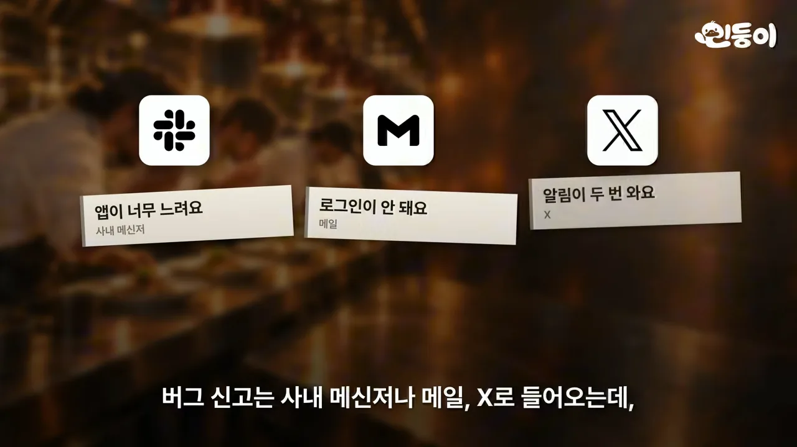
지금은 GrokBot이 그 창구들을 계속 지켜보다가 버그 신고가 보이면 Cursor에 둔 관리 AI에게 넘겨요. 관리 AI는 직접 요리하지 않아요. 들어온 주문서를 AI 요리사들에게 나눠 주고 챙기는 수셰프예요. 아래 화면은 우리 식으로 바꾼 예예요. Slack과 GitHub 이슈 목록에서 버그 이슈를 AI들이 하나씩 받아 가요.
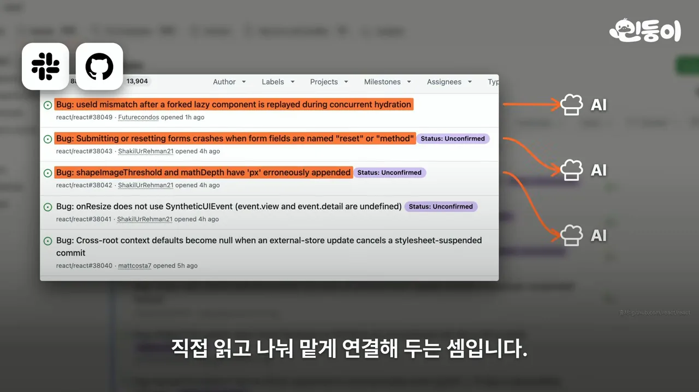
신고 하나에 AI 하나가 답이 아닌 이유
신고가 한꺼번에 30개 들어오면 어떻게 나눌까요. 첫 그림처럼 AI 하나에 신고 하나씩 맡기면 빠를 것 같아요. 그런데 '앱이 느리다'는 신고 여러 개가 사실 같은 원인에서 나왔을 수 있어요. 손님 셋이 짜다고 하면 요리 셋을 따로 고칠 게 아니라 소금통부터 봐야 하죠.
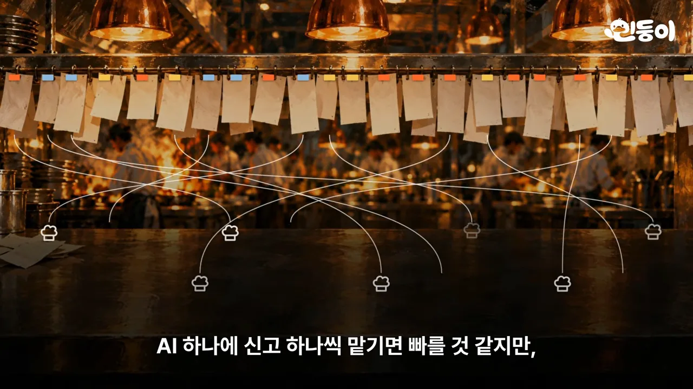
그래서 로렌 탄은 관리 AI가 관련된 신고끼리 묶어서 맡기게 설계했어요. 두 번째 그림에서는 신고가 '느려짐', '로그인 오류', '알림 중복' 세 묶음으로 모이고, 묶음마다 AI가 하나씩 붙어요.
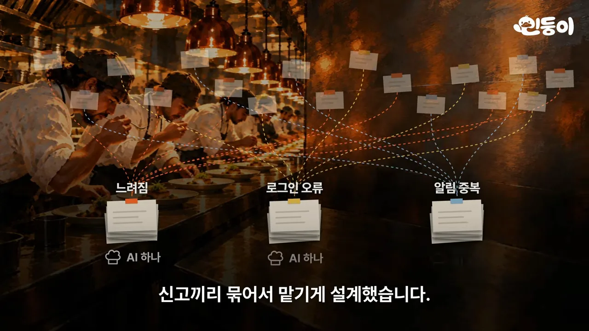
일부러 고치지 않는 AI
로렌 탄은 고치지 않는 AI도 하나 써요. React 코드에서 실수하기 쉬운 패턴만 찾아다니며, 고치지 말고 문서에 적어 두기만 하는 담당이에요. 화면의 메모지에는 'Effect 안에서 계산', 'state 리셋을 Effect로', '이벤트 로직을 Effect에' 같은 실수 패턴이 적혀 있어요. 배경은 React 공식 문서의 You Might Not Need an Effect 페이지예요.
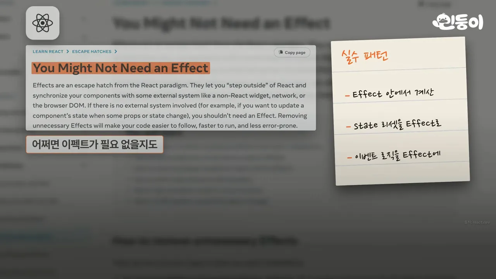
며칠에 한 번 그 문서를 열면 원인 하나만 고치면 되는 경우가 보여요. pstack의 principle-fix-root-causes가 이 원칙이에요. 화면의 설명은 '각 증상을 시스템이 처음 잘못된 곳까지 거슬러 올라가 거기서 고치라'고 해요.
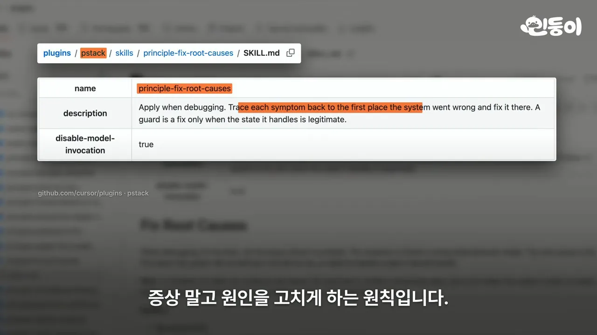
2,500개를 다 맛보지 않고 믿는 법
로렌 탄이 혼자 한 달 동안 반영한 PR은 2,500개예요. 상당수는 새 기능이 아니라, 영업이 끝난 주방을 정리하듯 코드를 다듬는 일이에요. 원래 대담에서는 이 일을 정원 가꾸기(gardening)라고 불러요. 이걸 다 맛볼 수 없으니 맛보는 일도 AI에게 맡겼어요.
그림에서 PR이라고 적힌 접시 하나에 검증 AI 세 개가 붙어 있어요. 검증 AI들은 앱을 실제로 띄우고 사람처럼 이곳저곳 눌러 봐요.
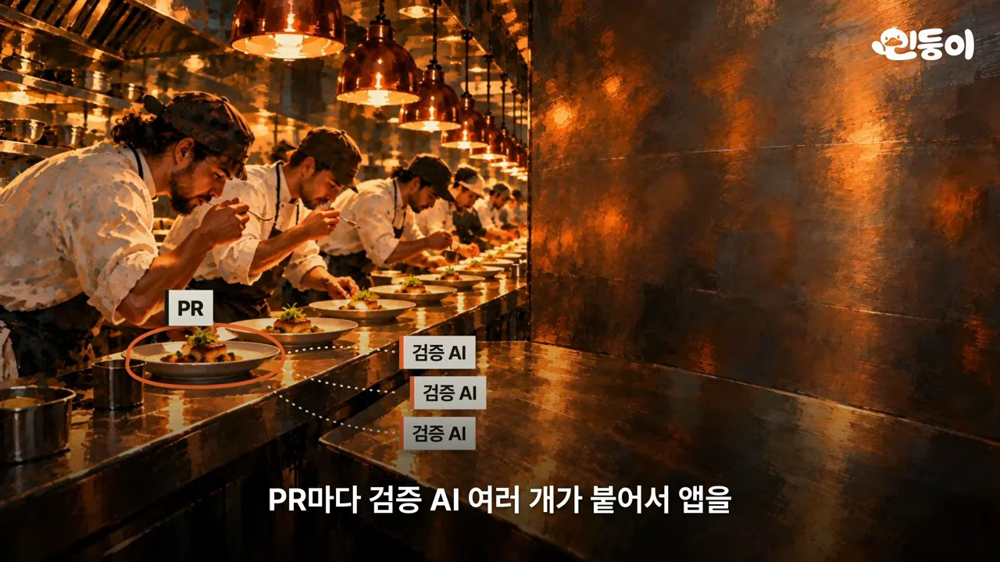
버그가 나오면 고치고 다시 확인해요. 고리 그림의 '고침 → 다시 확인 → 확인' 순서를 돌다가 '통과'가 나온 것만 반영해요.
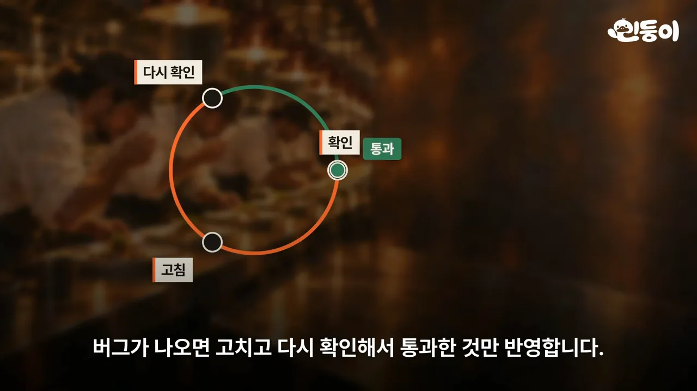
이 루프가 pstack poteto-mode의 Autopilot-full이에요. 화면의 강조 문장은 '서로 독립된 PR 대기열을 완전 자율로 merge까지 끌고 가고, PR마다 주인 AI가 하나씩 붙으며, 주인이 merge하기 전에 상위 AI가 여러 AI로 검증한다'는 뜻이에요. 로렌 탄이 오래 걸려 만든 과정을 우리는 이 한 마디로 켤 수 있어요.
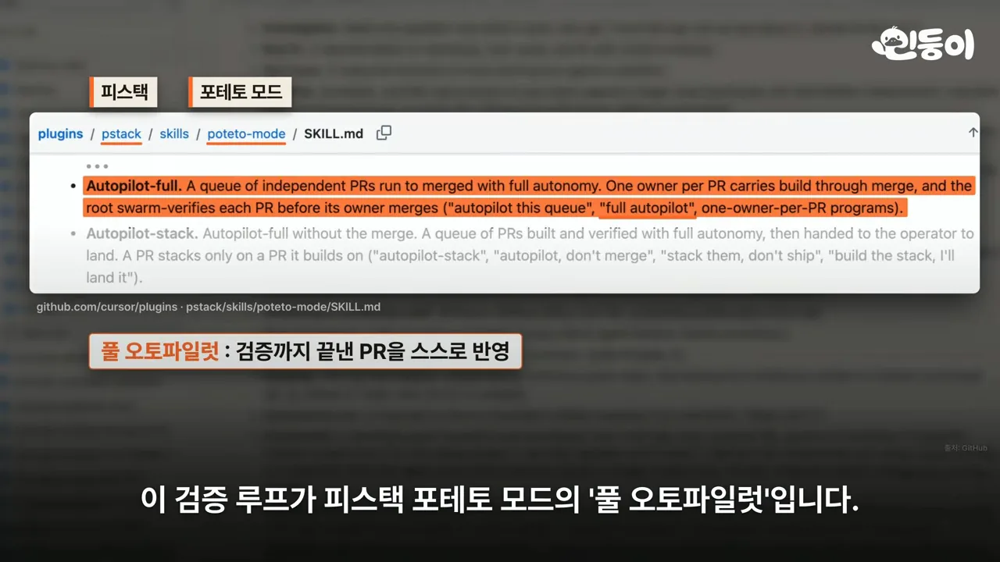
사람은 무엇을 하나요
영상이 여러 화면에 나눠 보여 준 흐름을 한 장으로 모으면 이래요. 사람이 끼는 곳은 맨 끝 한 군데예요.
flowchart LR A["버그 신고
메신저 · 메일 · X"] --> B["GrokBot
창구 지켜보기"] B --> C["관리 AI
신고 묶어서 나누기"] C --> D["AI 요리사들
고치기"] D --> E["검증 AI 여러 개
앱 띄워 눌러 보기"] E -- "버그 발견" --> D E -- "통과" --> F["반영"] F --> G["로렌 탄
아침에 몇 개만 맛보기"] G -- "이상하면" --> H["되돌리고
스킬 · 검사 규칙 고치기"]
로렌 탄은 아침마다 밤새 반영된 것 중 몇 개만 골라 꼼꼼히 맛봐요. 맛이 이상하면 되돌리고, 요리사가 아니라 주방의 매뉴얼을 고쳐요. 여러 AI가 같은 지름길을 타거나 같은 꼼수를 퍼뜨리고 있으면, 그 AI를 붙잡고 고치는 대신 스킬이나 검사 규칙을 고쳐 다시는 안 생기게 해요.
처음 켜 두고 잔 날은 뭔가 망가뜨릴까 봐 무서웠다고 해요. 규칙이 쌓이면서 지금은 오히려 잠을 훨씬 잘 잔대요.
되돌릴 수 없는 변경은요
데이터가 날아가는 것처럼 한번 반영하면 끝인 변경은 어떡하냐고 맷 포콕이 물어요. 로렌 탄은 결국 검증을 얼마나 확실하게 할 수 있느냐에 달렸다고 답해요. 검증이 확실할수록 위험한 변경도 미리 걸러 낼 수 있어요.
원래 대담에서는 여기에 단서가 붙어요. 소프트웨어처럼 검증하기 쉬운 분야에서는 되돌릴 수 없는 변경도 사실상 되돌릴 수 있는 변경처럼 다룰 수 있지만, 프로그램으로 검증하기 어려운 분야라면 이 방식까지 가기 어렵다고 해요. 그러면서 이 질문에는 본인도 아직 답이 없다고 말해요. 영상은 이 대목을 짧게 줄였어요.
I think it's a great question that I don't really have the answer to.
정말 좋은 질문인데, 저도 확실한 답은 없어요.
— 원래 대담 57:24 (이 영상 06:06 부근)
내 주방은 내가 차려요
마지막 질문은 이거예요. 두 사람 다 스킬 묶음을 공개했는데 누구 걸 써야 하냐는 거죠. 화면 왼쪽이 맷 포콕의 mattpocock/skills, 오른쪽이 로렌 탄의 pstack 스킬 폴더예요.
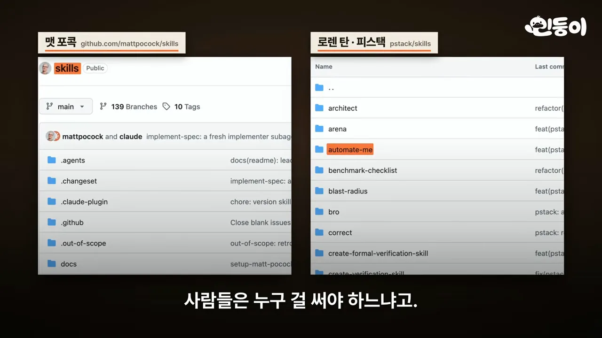
automate-me가 이 섹션 끝에 다시 나와요. 영상 06:23에서 보기로렌 탄의 답은 둘 다 써도 된다는 거예요. 맷 포콕의 grill-me로 AI가 나에게 질문을 퍼붓게 해서 계획을 다듬고, 실행은 pstack에 맡기는 식이에요. 화면의 grill-me 설명은 'A relentless interview to sharpen a plan or design', 곧 계획이나 설계를 다듬는 끈질긴 인터뷰예요. 화살표가 오른쪽 pstack 폴더로 넘어가는 게 '계획은 grill-me, 실행은 pstack'이라는 뜻이에요.
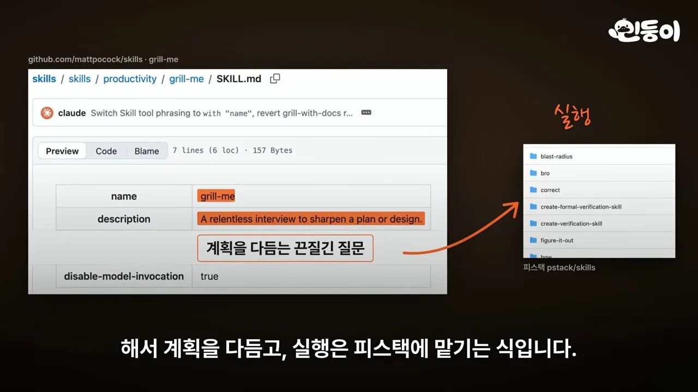
먼저 해 볼 일: 내가 끼어든 순간 찾기
로렌 탄이 먼저 해 볼 일로 꼽은 건, 내 지난 AI 대화 기록을 AI에게 읽혀서 내가 중간에 끼어들어 바로잡은 순간을 찾게 하는 거예요. 아래 대화 기록에서 주황색으로 칠한 줄이 그 순간이에요. '아니, 그게 아니라 눌러도 반응이 없어', '새로 말고 있던 테스트를 고쳐', '아니, 커밋 메시지는 한국어로'.
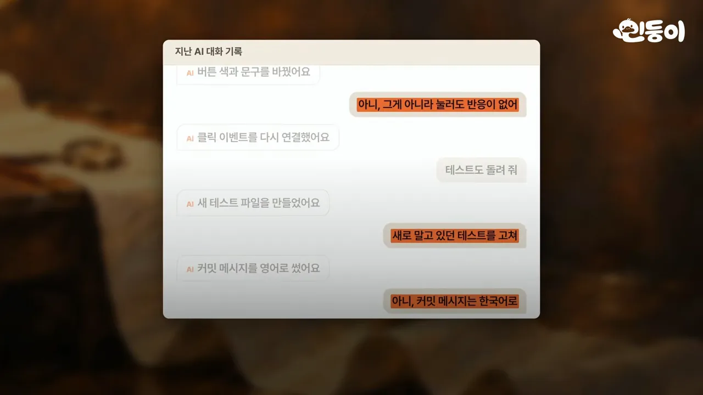
그 순간들이 검사 규칙이나 새 스킬이 될 자리예요. 앞의 세 줄은 아래 SKILL.md의 규칙 세 개로 바뀌어요. '고친 뒤 직접 눌러 확인한다', '테스트는 있던 것부터 고친다', '커밋 메시지는 한국어로 쓴다'.
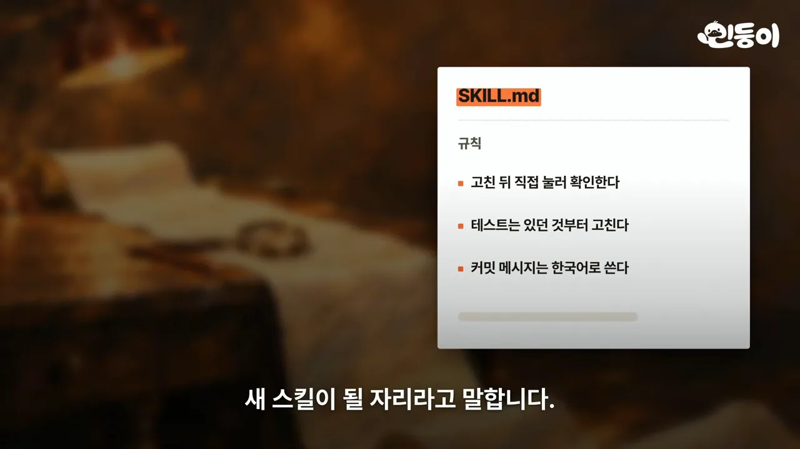
영상은 pstack의 automate-me가 이 일을 한다고 소개해요. 화면의 설명은 '내 선호나 일하는 방식을 스킬로 옮기고, 필요하면 최근 대화 기록(recent transcripts)에서 근거를 새로 뽑아 온다'는 내용이에요.
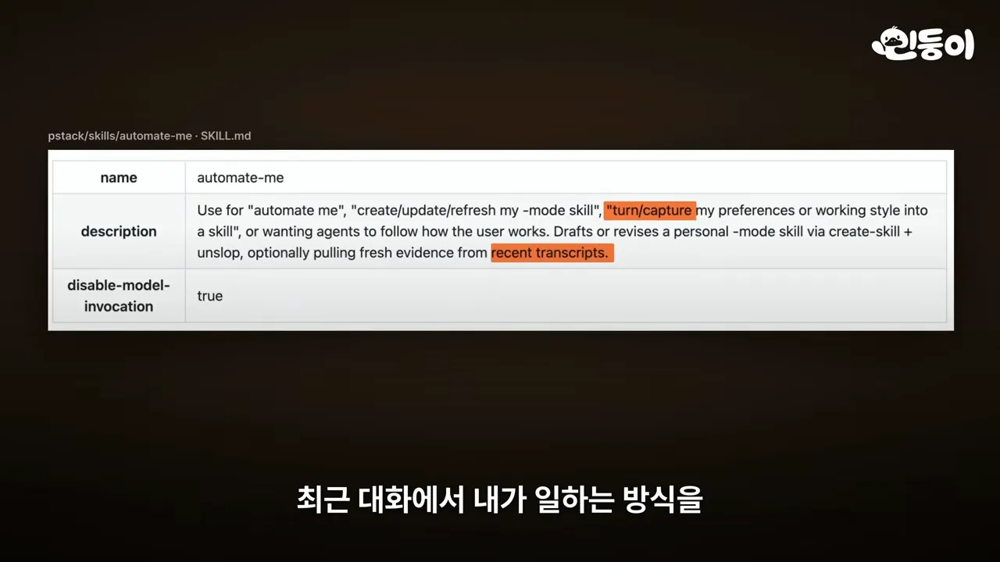
-mode 스킬이에요. 영상 06:53에서 보기영상에 나온 스킬 한눈에 보기
영상이 화면에 띄운 스킬을 나온 순서대로 모았어요. 앞의 둘은 검증, 가운데 셋은 원칙, 뒤의 셋은 작업 방식과 계획이에요.
| 스킬 | 누구 것 | 영상에서 맡은 일 |
|---|---|---|
create-verification-skill | pstack | 내 프로젝트 전용 검증 스킬을 만들어요 |
maintain-verification-skill | pstack | 앱이 바뀌면 검증 스킬도 맞춰 고쳐요 |
principle-build-the-lever | pstack | 손으로 하지 말고 도구부터 만들어요 |
principle-encode-lessons-in-structure | pstack | 두 번 적은 지시는 린트나 스크립트로 바꿔요 |
principle-fix-root-causes | pstack | 증상 말고 원인을 고쳐요 |
poteto-mode (Autopilot-full) | pstack | 검증까지 끝낸 PR을 스스로 반영해요 |
grill-me | 맷 포콕 | 질문을 퍼부어 계획을 다듬어요 |
automate-me | pstack | 내 대화 기록에서 일하는 방식을 뽑아 스킬로 만들어요 |
스킬은 그냥 말이에요
맷 포콕은 스킬에 마법 같은 건 없다고 해요. 그냥 말이라고요. 그러니 두 사람의 스킬로 시작해도 좋고, 내 대화 기록으로 나만의 스킬을 만들어 봐도 좋아요.
There's nothing magical in them, right? They're just words.
스킬에 마법 같은 건 없어요. 그냥 말이에요.
— 원래 대담 1:04:38 (이 영상 06:39 부근)
로렌 탄의 주방도 처음부터 다 갖춘 건 아니었어요. AI가 고친 결과를 브라우저에서 직접 확인해 날라 주던 일, 그 하나를 AI에게 넘긴 데서 시작했어요.